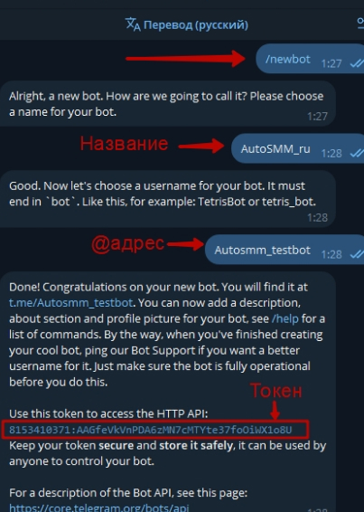

A
U
T
O
S
M
M
Как Настроить AutoSMM в формате чат-бота
- Для начала, чтобы получить api_id и api_hash зарегистрируйтесь на сайте https://my.telegram.org/auth
Смотреть видео, как получить api_id и api_hah для Telegram
Пример текста для продолжения текста в этом же заголовке но после медиа
как создать чат-бота в Telegram
- Напишите боту https://t.me/BotFather команду /newbot и следуйте инструкциям.
- 2.1 Сохраните токен бота для ипользования в АвтоСММ.
- 2.2 Откройте только что созданного бота и запустите его командой /start

2. Нашли @BotFather в Telegram

2.1 Создали нового бота и получили токен

2.2 Запустили созданного бота
КАК Создайть закрытый канал в Telegram для модерации контента от автосмм
- Посмотрите на видео, как создать закрытый канал в Telegram (для модерации контента в случае необходимости).
- 3.1 Добавьте бота в администраторы канала, который мы до этого создали. (если вы не можете найти бота в списке юзеров, значит вы не запустили бота, вернитесь в п.2.2)
- 3.2 Напишите любое сообщение (пост) в канале.
- 3.3 Перешлите сообщение из канала в Get My ID https://t.me/getmyid_bot
- В ответ вы получите "Forwarded from chat:" и "Your user ID:" - сохраните эти данные для настроек АвтоСММ
- В ответ вы получите "Forwarded from chat:" и "Your user ID:" - сохраните эти данные для настроек АвтоСММ
- В ответ вы получите "Forwarded from chat:" и "Your user ID:" - сохраните эти данные для настроек АвтоСММ
- В ответ вы получите "Forwarded from chat:" и "Your user ID:" - сохраните эти данные для настроек АвтоСММ
- В ответ вы получите "Forwarded from chat:" и "Your user ID:" - сохраните эти данные для настроек АвтоСММ
- В ответ вы получите "Forwarded from chat:" и "Your user ID:" - сохраните эти данные для настроек АвтоСММ
- В ответ вы получите "Forwarded from chat:" и "Your user ID:" - сохраните эти данные для настроек АвтоСММ
- В ответ вы получите "Forwarded from chat:" и "Your user ID:" - сохраните эти данные для настроек АвтоСММ
Активируйте чат-бота АвтоСММ с помощью менеджера
- Для бесплатного использования АвтоСММ - Зарегистрируйтесь на нашем сайте и укажите полученные данные в разделе настройки «АвтоСММ».
- Или передайте своему личному менеджеру информацию полученную информацию по этой снтрукции в формате чек-листа для активации персонального чат-бота АвтоСММ.
- (Чек-листа для активации бесплатного периода в AutoSMM.ru):
- api_id и api_hash: получить на my.telegram.org. (п.1)
- Bot token: полученный через BotFather. (п.2)
- Forwarded from chat" + "Your user ID" : узнали через бота Get My ID (п.3.3)
- Зарегистрироваться на autosmm.ru и следовать дальнейшим инструкциям в личном кабинете